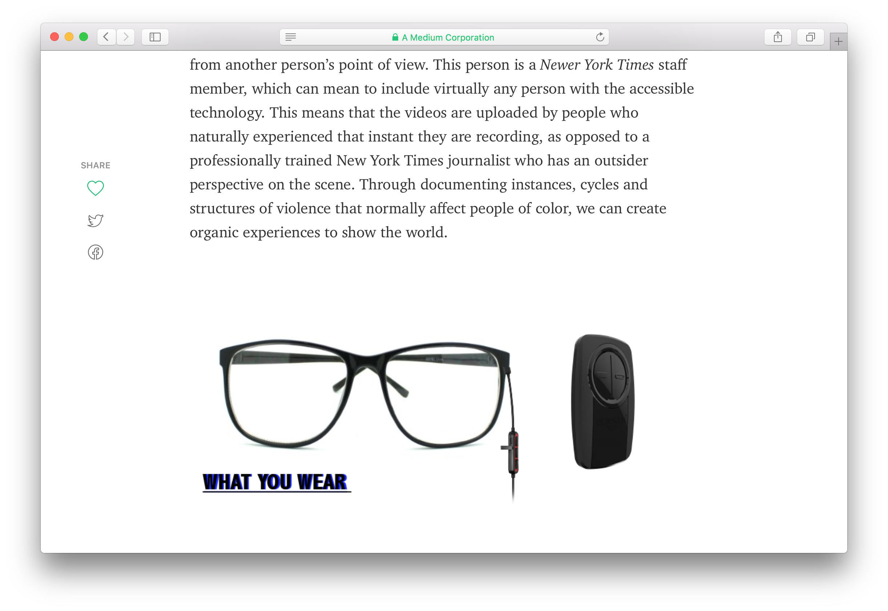
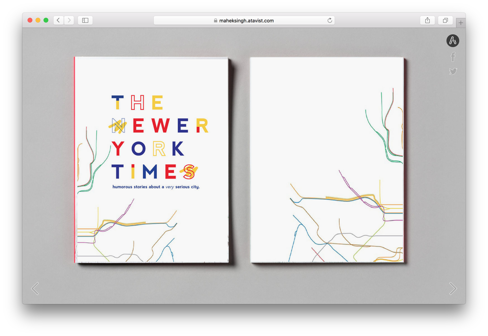
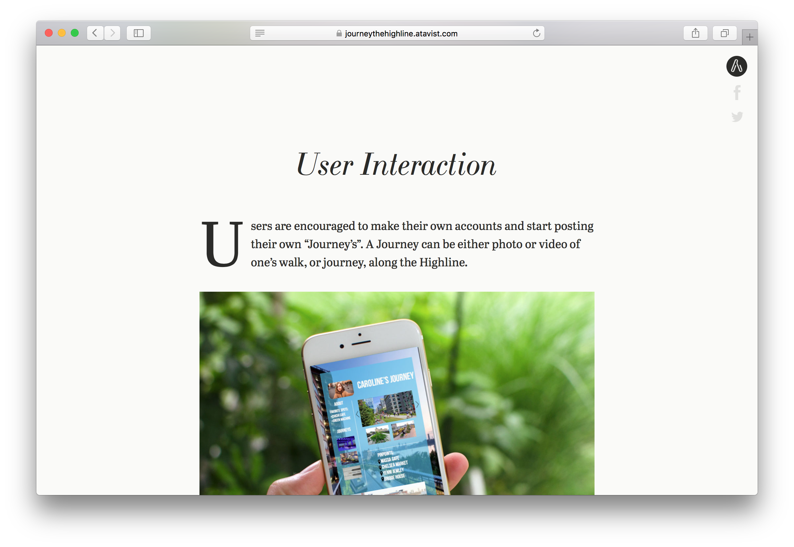
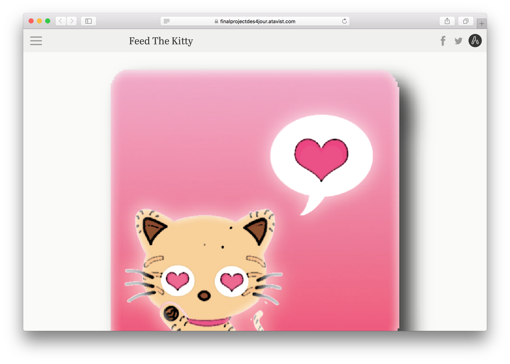
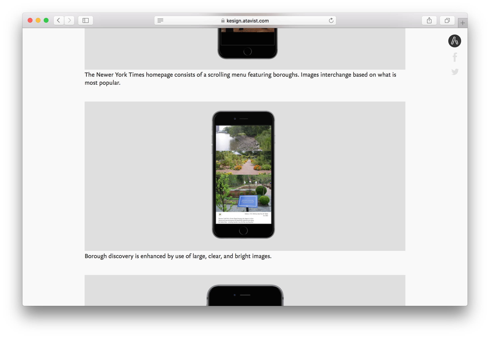
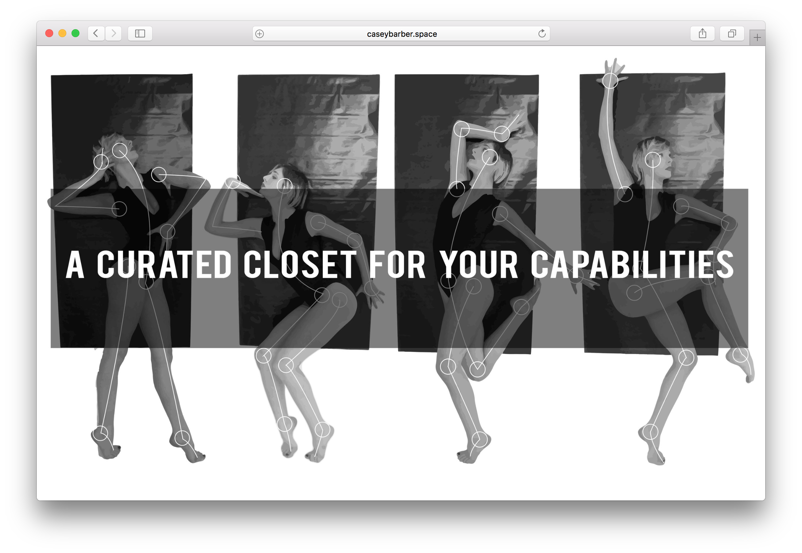
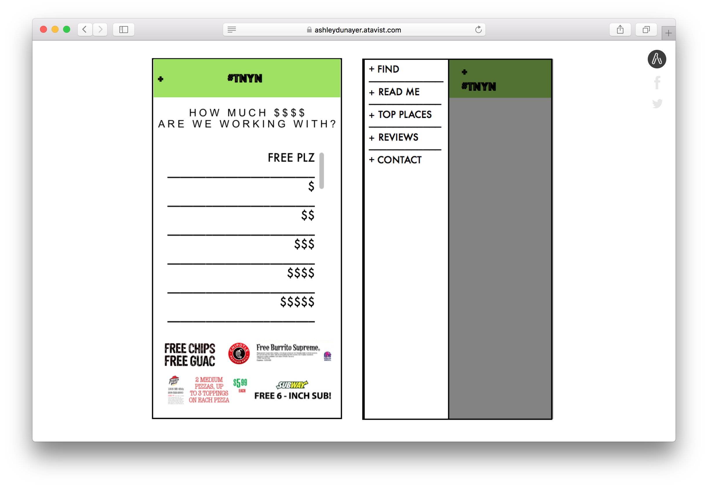
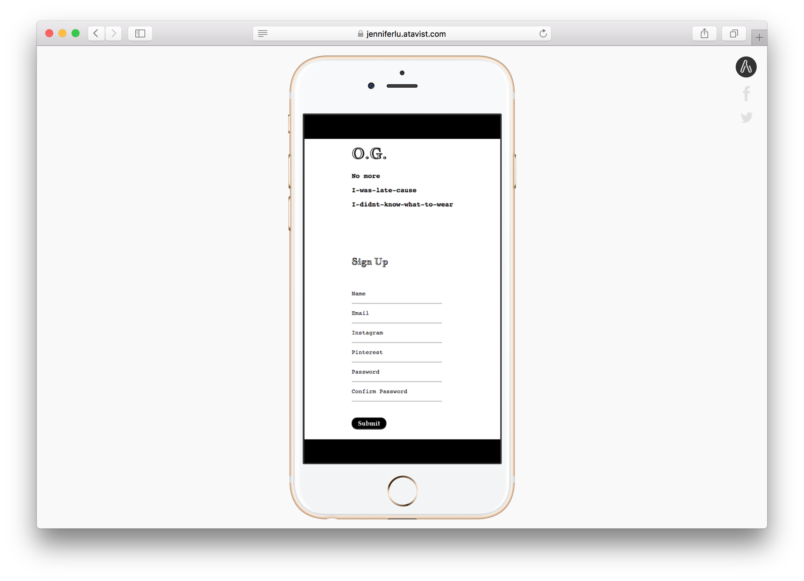
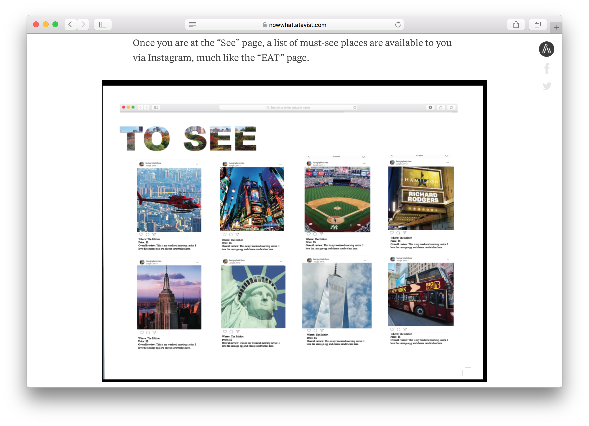
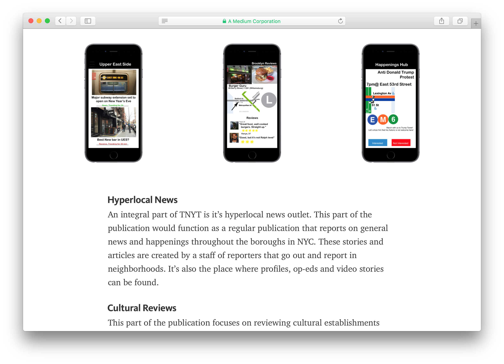

“The Newer York Times”
Below is the work students submitted for the final. Each student had to propose an idea for a “piece of journalism.” The product was not supposed to be one that someone reads or views; it had to be a product that someone uses to perform an action. What makes a written or visual piece journalistic, and how could those same principles inspire not only the content we share, but the tools we use?
The name of the zine had to be The Newer York Times, but the concept was open. The final product did not have to be actualized. Rather, the concept had to be proposed as a simple brief – composed of descriptive writing and visual renderings. Lastly, the brief had to be posted to the web using one of the following publishing tools: Atavist, Medium, Squarespace, or something similar.
A VR platform for users by users
By Luna Olavarria Gallegos
humorous stories about a very serious city
By Mahek Singh
Journey – The Highline
By Joy Roach and Mollie Gold
Feed the Kitty
By India Fizer and Quil Lemons
A Change of Scenery
By Kamilah Udomsap
The Way We Move
By Casey Barber
tackling Food + Food Waste
By Melissa Guerrero

Rich food for cheap people
By Ashley Dunayer
The O.G.
By Jennifer Lu
NOW WHAT NEW YORK?
By KC Badala and Chloe Richman
The New York Times Native
By Jorge Romero
